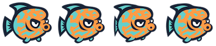
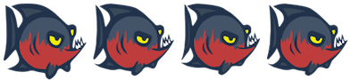

7.5
Healer-Animal langs
| #lang healer-animal-food |
1 Functions
Produces a Healer-type 2-d game.]
2 Sprites
Note: Not all sprites are available in Ratchet – only the sprites listed in the legend panel can be accessed in that language in Ratchet.
Aluminumcan Image
Apple Image Image
Banana Image Image
Blackcat Sheet Image
Blackdog Sheet Image
Blackhorse Sheet Image
Broccoli Image Image
Browncat Sheet Image
Browndog Sheet Image
Brownhorse Sheet Image

Cherries Image Image
Chicken Sheet Image
Coppercoin Sheet Image
Cow Sheet Image
Crab Sheet Image
Eggplant Image Image
Forcefield Icon Image
Ghostfish Sheet Image
Goat Sheet Image
Goldcoin Sheet Image
Goldencat Sheet Image
Goldendog Sheet Image
Goldenhorse Sheet Image
Grayhorse Sheet Image
Greenfish Sheet Image
Greengrapes Image Image
Grow Icon Image
Health Icon Image
Jellyfish Sheet Image
Kiwi Image Image
Llama Sheet Image
Mushroom Image Image
Octopus Sheet Image
Onion Image Image
Orangefish Sheet Image

Pepper Image Image
Pig Sheet Image
Pineapple Image Image
Plasticbottle Image
Potato Image Image
Purplegrapes Image Image
Question Icon Image
Rabbit Sheet Image
Rainbow Icon Image
Redfish Sheet Image

Round Elephant Image

Round Giraffe Image
Round Hippo Image
Round Kangaroo Image
Round Monkey Image

Round Penguin Image
Round Zebra Image
Sea Bg Image
Shark Sheet Image
Sheep Sheet Image
Shrink Icon Image
Silvercoin Sheet Image
Speed Icon Image
Starfish Sheet Image
Strawberry Image Image
Tomato Image Image
Trashbag Image
Turkey Sheet Image
Whitecat Sheet Image
Whitedog Sheet Image
Whitehorse Sheet Image
Wolf Sheet Image
Yellowfish Sheet Image
Zookeeper Sheet Image